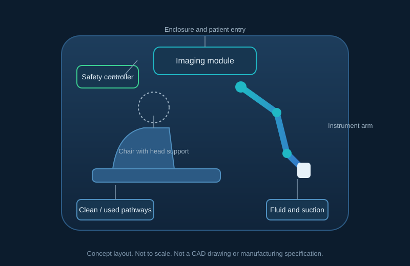
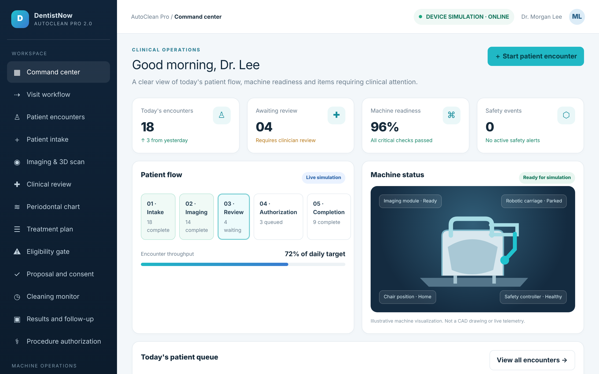
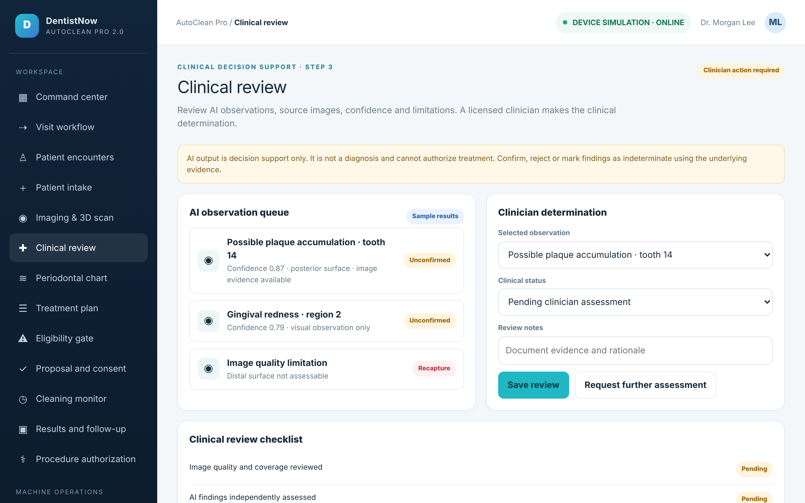
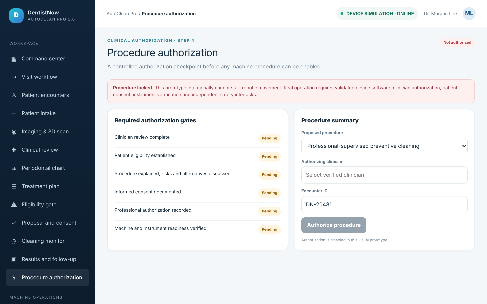

AutoClean Pro 2.0 · Concept stage
An AI-assisted dental examination station that cleans only what has been cleared.
The machine completes intake, screening and oral imaging, sends findings to a licensed dental professional, and performs validated cleaning only after clearance. We are seeking feasibility funding to prove the core technology first.

Stage
Concept and planning
Not yet a working prototype. Stage A builds the first one.
First ask
$150K – $300K
Feasibility demonstrator on dental models. Not a patient-ready device.
Design rule
Clinician in the loop
Licensed professionals make clinical decisions. The machine stops when uncertain.
Regulatory
Not cleared
No FDA clearance has been obtained. A pre-submission is planned before major spending.
The interface
Screens from the interface prototype. The data is simulated; no hardware or patient records are connected.



Watch the overview
A 72-second explainer of the concept. It shows the first-visit process, the safety design and the funding stages. Concept illustration only.
Concept illustration and planning information only. Not a medical device. Not cleared or approved by the FDA. Not an offer of securities.
About the machine
A dental station that examines first and cleans second. It is designed to stop, not continue, when a step is uncertain.
Motorized chair
Positioning, head support, emergency release and a patient stop control.
3D oral scanning
A digital model of the teeth and visible gumline, recorded tooth by tooth.
Findings with evidence
Each finding is labelled Observed, Suspected or Not assessable, with the evidence behind it.
Robotic cleaning
Force-monitored instruments for approved polishing and plaque removal, after authorization.
Independent safety
A hardware safety controller that works without the cloud or AI, and retracts instruments on any fault.
Infection control
Separate clean and used-instrument pathways, with validated reprocessing and cycle records.
How a first visit works
Examination comes before any cleaning. A patient with pain, swelling or an uncertain finding is referred to a professional and is not cleaned by the machine.
Step 1
Check in and screen
Identity, medical history, medications and symptoms, recorded per tooth or region.
Step 2
Examine and assess
Oral photos, a 3D scan, AI-assisted findings and periodontal measurements by validated instruments.
Step 3
Clinician review
A licensed professional confirms or rejects each finding. The AI does not make the decision.
Step 4
Eligibility check
Any stop rule ends the cleaning path and refers the patient. The system never declares anyone cleared.
Step 5
Consent and authorization
The patient agrees to the plan and can stop at any time. A professional must authorize the procedure.
Step 6
Cleaning and report
Approved cleaning under supervision, a full report and a follow-up plan.
Funding, in stages
We prove the core technology first, then decide on the next stage. Each stage ends with a review. Figures are planning estimates, not quotations.
Next
Stage A · Feasibility
A laboratory demonstrator on dental models: positioning accuracy, scanning, emergency stop and the first software interface. Not a patient-ready device.
After Stage A review
Stage B · Functional prototype
An integrated chair, robotic assembly, scanning, cleaning mechanism and safety controller, tested in the lab.
After Stage B review
Stage C · Commercial development
Clinical validation, quality systems, regulatory submission and manufacturing preparation.
Public programs may also support the work. Program terms are confirmed directly with each program before use.
Where we are today
A plain account of progress, updated as the project moves.
- Engineering planningDone
A 40-sheet planning binder with acceptance criteria. Concept planning, not CAD. - Interface prototypeDone
A clickable patient and clinical prototype with simulated data. No hardware connected. - Business and funding planDone
Stages, budgets, funding sources, risks and a 90-day plan. - Company formation and legal reviewNext
Next. Form DentistNow Robotics as a Delaware company, then counsel review of the materials and the investment structure. - Feasibility demonstratorPlanned
The Stage A laboratory demonstration on dental models. - Clinical validation and regulatoryLater
Only after the prototype is proven. Not started. No regulatory clearance has been obtained.
Frequently asked questions
Is this machine used on patients today?
No. AutoClean Pro 2.0 is in concept and development. It has not been cleared or approved by the FDA or any other regulator, and it is not available for clinical use.
Does it replace a dentist?
No. Licensed professionals stay responsible for clinical decisions, authorization and any procedure beyond the validated scope. Version 1 does not drill, extract, do restorative work or treat below the gumline.
What does the first stage deliver?
A laboratory demonstrator on dental models that shows positioning accuracy, scanning, emergency stop and an operator interface. It is not a patient-treatment device.
Can I invest?
This page is not an offer to sell or a solicitation to buy any security. Any future investment will be offered only through documents prepared with securities counsel, and only to people who qualify. Contact us to express interest, and we will reply with the materials that are appropriate for you.
How is my information handled?
We do not collect personal information through this page. If you email us, we keep your message and contact details to reply. A privacy notice will be published before this page goes live.
Use of Stage A funds (planning)
How the first $150K–$300K would be allocated. Estimates to be replaced with supplier quotes.
| Category | Range |
|---|---|
| Engineering services and test fixtures | $60K – $120K |
| Software and AI prototype | $35K – $70K |
| Robotic platform and hardware | $20K – $40K |
| Regulatory consulting and FDA pre-submission preparation | $15K – $30K |
| Legal, entity and securities counsel | $10K – $20K |
| Patent search and freedom-to-operate | $5K – $10K |
| Project management and contingency | $5K – $10K |
Milestones for the first 90 days
What we will show at the end of each month. Results will be posted in the updates section.
Days 1–30
Define and design
Final product requirements, chair and arm configuration, preliminary parts list, regulatory assessment, and 20 buyer interviews.
Days 31–60
Prove the technology
Robotic platform selected, scanning and positioning tests on dental models, and the safety architecture written up.
Days 61–90
Build the demonstrator
Controlled movement, emergency stop and the operator dashboard shown on the test platform, with an engineering results report.
Team and open roles
We are assembling a small core team with contractors, and a dental clinical advisor and regulatory consultant from the start. Names will be published once each person has agreed.
Product Director
Owns the product and the stage gates. Open.
Mechanical and robotics engineers
Chair, arms, sensors and instrument mounts. Open.
AI and software engineers
Oral scanning, patient interface and operator dashboard. Open.
Dental clinical advisor
Clinical requirements and safety review. Not yet engaged.
Regulatory specialist
FDA pathway and quality system. Not yet engaged.
Main risks
The most important reasons this could fail. The full risk discussion will be in any offering documents.
- The technology may not perform on real teethTested first
Stage A is designed to test this before large spending. - The regulatory pathway may take longer or cost morePlanned
An early FDA pre-submission is planned before major spending. - Patient safetyDesigned in
Independent safety controller, conservative eligibility rules, and clinician review. - Future funding may not be availableOpen
Each stage depends on a successful review. Public programs may help but are not guaranteed.
For investors and partners
A simple, careful process. We do not take money through this website.
1
Tell us your interest
Use the contact block below. We reply with a short summary.
2
Review the materials
Materials are shared only after counsel has approved the recipient group and a confidentiality agreement is in place.
3
Decide, with counsel
Any investment is made only through formal documents, and only by people who qualify.
Project updates
Dated progress notes. Nothing is posted until it is confirmed.
- Planning package completePosted
Engineering planning binder, funding plan, interface prototype and explainer video. - Company registrationPending
Will be posted once the company is registered.
Get in touch
Tell us briefly who you are and why you are interested: investor, dental professional, research partner or strategic partner. We will reply with the right materials.
Website: dentistnow.co
Email: info@dentistnow.co (mailbox to be created)
Mailing address: [business address — to be set up]
Privacy notice: dentistnow.co/privacy (to be published before launch)